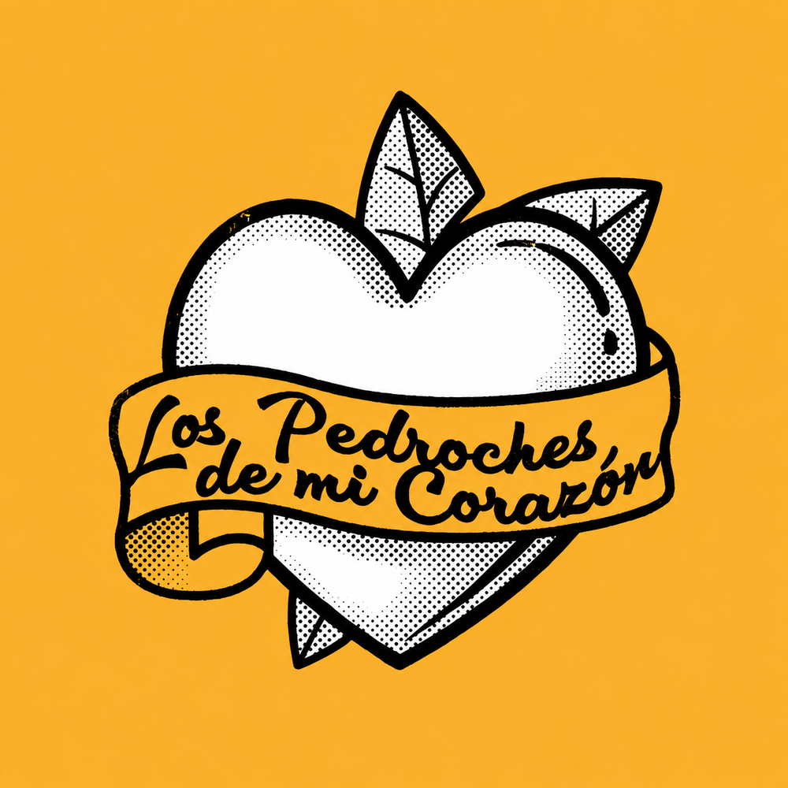
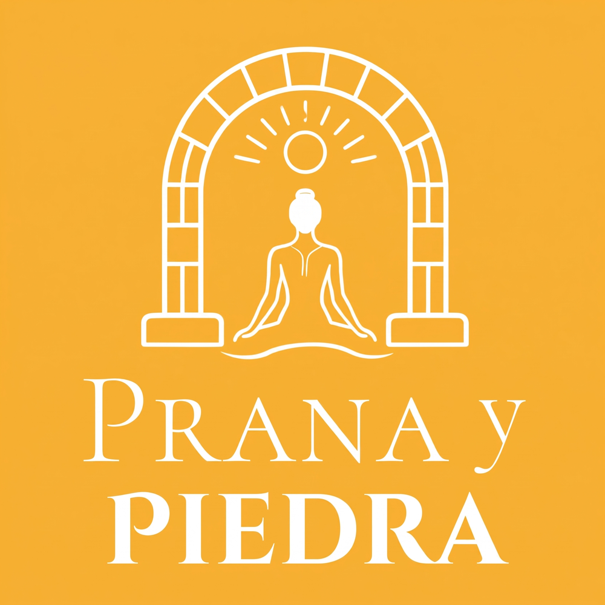

En nuestro centro cultural
En funcionamiento
Ludoteca Creativa
Un espacio para dar rienda suelta a la creatividad de los más pequeños en el centro cultural de La Paralela.
Conocer el proyectoNuestras producciones se realizan con un alto nivel de exigencia. Trabajamos con especialistas, cuidamos cada detalle y nos esforzamos en ofrecer a nuestro público proyectos profesionales y de calidad.
En nuestro centro cultural
En funcionamiento
Un espacio para dar rienda suelta a la creatividad de los más pequeños en el centro cultural de La Paralela.
Conocer el proyecto
En nuestro centro cultural
Mañanas de verano para niños y niñas de 3 a 12 años, con grupos reducidos y actividades poco convencionales.
Proyecto producido junto a Ana Isabel López.
Conocer el proyecto
Podcast de humor, historia y cultura
Un podcast de humor sobre historia y cultura de la comarca de los Pedroches.
Proyecto producido junto a Miguel Moyano.
Conocer el proyecto
Yoga y patrimonio
Sesiones de Yoga transformadoras en enclaves patrimoniales de los Pedroches.
Proyecto producido junto a Elena López.
Conocer el proyectoEl siguiente paso
Si cree que alguna de nuestras producciones puede ser de utilidad para su entidad, estamos abiertos a cualquier forma de colaboración, patrocinio o contratación.